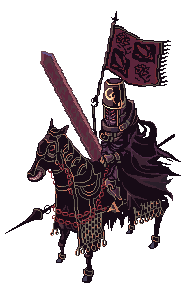

Cavaleiro do Abismo
Minha arma preferida é definitivamente a Lança do Deus Dragão, apesar de eu ser um maior fã de espadas em geral. Além dela ser uma lança poderosa, ela também tem uma habilidade que eu amo que é a habilidade de converter o meu dano em vida, ou seja, recuperar meu HP quanto mais dano eu inflingir em monstros!
Uma das Sete Armas Mágicas, possuída originalmente por Zilant.
Atq. Mágico +280.
Força +3.
Destreza +5.
Aumenta o dano da habilidade [Sopro de Gelo] e [Sopro de Fogo] em 50%.
Converte 1% do dano causado em HP.
A cada nível de refino:
Dano Físico +2%.
Velocidade de ataque +2%.
Reduz o tempo de pós-conjuração de todas as habilidades em 1%.
Refino +8 ou mais:
Converte 2% adicional do dano causado em HP.
Refino +10 ou mais:
Converte 3% adicional do dano causado em HP.
Refino +12 ou mais:
Reduz o tempo de conjuração fixo em 70%.
Tipo: Lança de Uma Mão
Ataque: 360
Peso: 380
Nível da Arma: 4
Nível Necessário: 130
Classe: Evoluções de Espadachim
Minha classe favorita sempre foi o Espadachim e suas evoluções! A classe com maior HP do jogo e maior defesa, além de usar espadas, escudos e lanças. São a linha de frente do combate.
Espadachins podem usar as melhores armaduras de Rune-Midgard,
que combinadas com o seu alto vigor e capacidade de se curarem rapidamente,
os tornam a frente de ataque em qualquer tipo de combate.
São capazes de empunhar tanto lanças quanto espadas de uma ou duas mãos,
e estão sempre prontos a defender os mais fracos e revidarem com força com
suas incríveis habilidades de batalha.
O Cavaleiro do Abismo. A área de Glast Heim é uma área de castelo assombrado que sempre me interessou. Todos os monstros de lá são interessantes, mas o Cavaleiro do Abismo é o que eu mais gosto.